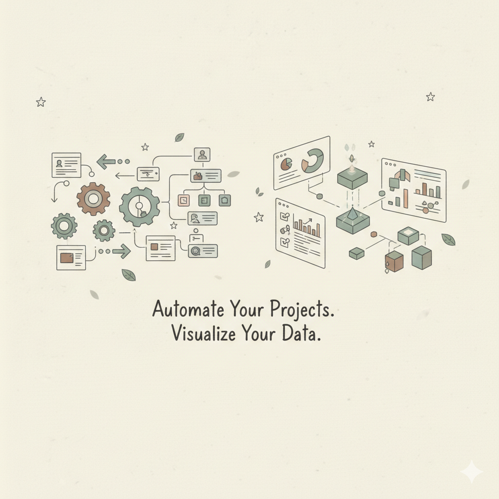

Servicios
En Widok Data ofrecemos soluciones basadas en datos para mejorar la toma de decisiones.
- Análisis exploratorio y diagnóstico
- Dashboards interactivos
- Automatización de reportes
- Análisis de precios y competencia
- Consultoría estratégica
